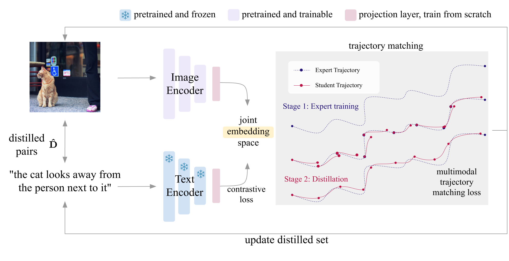
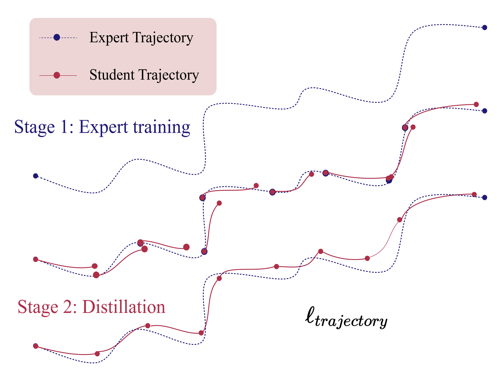
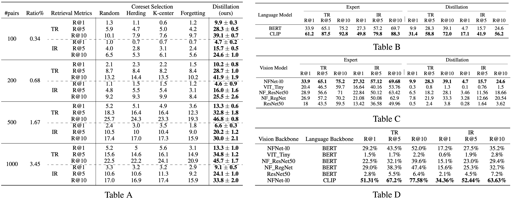

Dataset distillation methods offer the promise of reducing a large-scale dataset down to a significantly smaller set of (potentially synthetic) training examples, which preserve sufficient information for training a new model from scratch. So far dataset distillation methods have been developed for image classification. However, with the rise in capabilities of vision-language models, and especially given the scale of datasets necessary to train these models, the time is ripe to expand dataset distillation methods beyond image classification. In this work, we take the first steps towards this goal by expanding on the idea of trajectory matching to create a distillation method for vision-language datasets. The key challenge is that vision-language datasets do not have a set of discrete classes. To overcome this, our proposed vision-and-language dataset distillation method jointly distill the images and their corresponding language descriptions in a contrastive formulation. Since there are no existing baselines, we compare our approach to three coreset selection methods (strategic subsampling of the training dataset), which we adapt to the vision-language setting. We demonstrate significant improvements on the challenging Flickr30K and COCO retrieval benchmarks: for example, on Flickr30K the best coreset selection method which selects 1000 image-text pairs for training is able to achieve only 5.6% image-to-text retrieval accuracy (i.e., recall@1); in contrast, our dataset distillation approach almost doubles that to 9.9% with just 100 (an order of magnitude fewer) training pairs.
Bi-Trajectory-Guided Co-Distillation

Dataset distillation traditionally focuses on classification tasks with distinct labels, creating compact distilled datasets for efficient learning.
We've expanded this to a multimodal approach, distilling both vision and language data, emphasizing their interrelation.
Unlike simple classification, our method captures complex connections between image and text data.
It is worth noting that this would be impossible if we solely optimize a single modality, which is supported by our single-modality distillation results.
The approach consists of two stages:
Obtaining the expert training trajectories \( \{\tau^*\} \), with each trajectory \( \tau^* = \{\theta^*_t\}_{t=0}^T \), by training multiple models for \( T \) epochs on the full dataset \( \mathbf{D} \). For our multimodal setting, the models are trained using bidirectional contrastive loss.
Training a set of student models on the current distilled dataset \( \hat{\mathbf{D}} \) using the same bidirectional contrastive loss, and then updating the distilled dataset \( \hat{\mathbf{D}} \) based on the multimodal trajectory matching loss of the student models' parameters and the optimal \( \theta^* \).
Vision-Language Bi-Trajectory Matching
Following the MTT formulation, we randomly sample \( M \) image-text pairs from \( \mathbf{D} \) to initialize the distilled dataset \( \mathbf{\hat{D}} \) (more details can be found elsewhere). We sample an expert trajectory (i.e., the trajectory of a model trained on the full dataset) \( \tau^* = \{\theta^*_t\}_{t=0}^T \) and a random starting epoch \( s \) to initialize \( \hat{\theta}_s = \theta^*_s \).
We train the student model on the distilled dataset for \( \hat{R} \) steps to obtain \( \hat{\theta}_{s+\hat{R}} \). We then update the distilled dataset based on multimodal trajectory matching loss \( \ell_{trajectory} \) computed on the accumulated difference between student trajectory and expert trajectory:
$$
\ell_{trajectory} = \frac{\|\hat{\theta}_{img, s+\hat{R}} - \theta^*_{img, s+R}\|_2^2}{\|\theta^*_{img, s} - \theta^*_{img, s+R}\|_2^2} + \frac{\|\hat{\theta}_{txt, s+\hat{R}} - \theta^*_{txt, s+R}\|_2^2}{\|\theta^*_{txt, s} - \theta^*_{txt, s+R}\|_2^2}.
$$
We update the distilled dataset by back-propagating through multiple (\( \hat{R} \)) gradient descent updates to the \( \hat{\mathbf{D}} \), specifically, image pixel space and text embedding space. We initialize the continuous sentence embeddings using a pretrained BERT model and update the distilled text in the continuous embedding space. For the distilled image optimization, we directly update the pixel values of the distilled images.

Results
We compare our distillation method to four coreset selection methods: random selection of training examples, herding, k-center and forgetting. We consider different selected sizes (100, 200, 500, and 1000) and report the image-to-text (TR) and text-to-image (IR) retrieval performance on the Flickr30K dataset in Table A.

We also provide ablation study on the selection of vision (Table B) and language (Table C) backbones. We introduce the Performance Recovery Ratio (PRR) to evaluate the effectiveness of dataset distillation. It quantifies the percentage of performance retained from the original data. The performance for various backbone combinations is shown in Table D.
Visualization
Left: The image and text pairs before the distillation. Right: The image and text pairs after 2000 distillation steps. Note that the texts visualized here are nearest sentence decodings in the training set corresponding to the distilled text embeddings.
Here we include a number of visualizations of the data we distilled from the multimodal dataset (both Flickr30K and COCO) for a more intuitive understanding of the distilled set.
We provide 50 distilled image-text paired examples including their visualization before the distillation process.
Those experiments are conducted using 100 distilled pairs, with pretrained NFNet and BERT as backbones and the synthetic step is set to 8 during distillation.
Conclusion
In this work, we propose a multimodal dataset distillation method for the image-text retrieval task.
By co-distilling both the vision and language modalities, we can progressively optimize and distill the most critical information.
Our experiments show that co-distilling different modalities via trajectory matching holds promise.
We hope that the insights we gathered can be a roadmap for future studies exploring more complex settings, and that our work lays the groundwork for future research aimed at understanding what is the minimum information required for a vision-language model to achieve comparable performance quickly, thereby building a better understanding of the compositionality of compact visual-linguistic knowledge.
Paper
Xindi Wu, Byron Zhang, Zhiwei Deng, Olga Russakovsky. Vision-Language Dataset Distillation
In submission. [Arxiv][Code]
Acknowledgements
This material is based upon work supported by the National Science Foundation under Grant No. 2107048. Any opinions, findings, and conclusions or recommendations expressed in this material are those of the author(s) and do not necessarily reflect the views of the National Science Foundation. We thank many people from Princeton Visual AI lab (Allison Chen, Jihoon Chung, Tyler Zhu, Ye Zhu, William Yang and Kaiqu Liang) and Princeton NLP group (Carlos E. Jimenez, John Yang), Tiffany Ling and George Cazenavette for their helpful feedback on this work.


{kind=link}